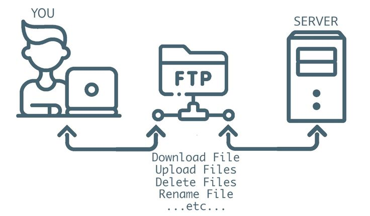

File Transfer Protocol (FTP)
Category: Network Communication
File Transfer Protocol (FTP) is a standard network protocol used to transfer files between computers over a network such as the Internet.
FTP allows users to upload and download files from a server, making it useful for website hosting, software distribution, and data sharing. It works alongside core networking systems like TCP/IP to ensure reliable communication.
FTP is commonly used by web developers to upload website files from a local computer to a remote web server.

Figure: FTP transferring files between devices over a network